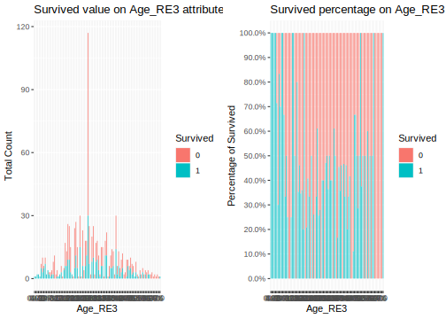

5.2 Dealt with Miss Values
We had a pretty good understanding of the Titanic datasets. We knew that there are missing values and some errors. They need to be resolved first of all. The systematic way to find missing value is to write a function checking the missing values, like this one,
Before that, let us quickly recap the datasets we have,
# assume we had imported both train and test dataset and we have combined them into on data
# If we save the file from the previous code we can load it directly
data <- read.csv("./data/data.csv", header = TRUE)
# Check our combined dataset details
glimpse(data) # compare with str(data)## Rows: 1,309
## Columns: 12
## $ PassengerId <int> 1, 2, 3, 4, 5, 6, 7, 8, 9, 10, 11, 12, 13, 14, 15, 16, ...
## $ Survived <int> 0, 1, 1, 1, 0, 0, 0, 0, 1, 1, 1, 1, 0, 0, 0, 1, 0, 1, 0...
## $ Pclass <int> 3, 1, 3, 1, 3, 3, 1, 3, 3, 2, 3, 1, 3, 3, 3, 2, 3, 2, 3...
## $ Name <fct> "Braund, Mr. Owen Harris", "Cumings, Mrs. John Bradley ...
## $ Sex <fct> male, female, female, female, male, male, male, male, f...
## $ Age <dbl> 22, 38, 26, 35, 35, NA, 54, 2, 27, 14, 4, 58, 20, 39, 1...
## $ SibSp <int> 1, 1, 0, 1, 0, 0, 0, 3, 0, 1, 1, 0, 0, 1, 0, 0, 4, 0, 1...
## $ Parch <int> 0, 0, 0, 0, 0, 0, 0, 1, 2, 0, 1, 0, 0, 5, 0, 0, 1, 0, 0...
## $ Ticket <fct> A/5 21171, PC 17599, STON/O2. 3101282, 113803, 373450, ...
## $ Fare <dbl> 7.2500, 71.2833, 7.9250, 53.1000, 8.0500, 8.4583, 51.86...
## $ Cabin <fct> , C85, , C123, , , E46, , , , G6, C103, , , , , , , , ,...
## $ Embarked <fct> S, C, S, S, S, Q, S, S, S, C, S, S, S, S, S, S, Q, S, S...We can observe that there are 1309 data records with 12 attributes. We can also see the types and values of each attribute. We understood the goal of the Titanic problem is to predict given passengers’ survival. So, except for the attributes PassengerID and the targeted variable Survived, there are 10 attributes present in the combined data that are potentially useful. Among them, two variables Name and Ticket are less useful intuitively and also confirmed from the previous chapter.
Let us focus on solving the data missing problem.
We can define a function missing_vars, which can get a proportion of values that are missing in each attribute.
# Define a function to check missing values
missing_vars <- function(x) {
var <- 0
missing <- 0
missing_prop <- 0
for (i in 1:length(names(x))) {
var[i] <- names(x)[i]
missing[i] <- sum(is.na(x[, i])|x[, i] =="" )
missing_prop[i] <- missing[i] / nrow(x)
}
# order
missing_data <- data.frame(var = var, missing = missing, missing_prop = missing_prop) %>%
arrange(desc(missing_prop))
# print out
missing_data
}Apply our function to the combined dataset data.
## var missing missing_prop
## 1 Cabin 1014 0.7746371276
## 2 Survived 418 0.3193277311
## 3 Age 263 0.2009167303
## 4 Embarked 2 0.0015278839
## 5 Fare 1 0.0007639419
## 6 PassengerId 0 0.0000000000
## 7 Pclass 0 0.0000000000
## 8 Name 0 0.0000000000
## 9 Sex 0 0.0000000000
## 10 SibSp 0 0.0000000000
## 11 Parch 0 0.0000000000
## 12 Ticket 0 0.0000000000Survived has 418 missing values that is the test dataset number. Our entire test dataset needs to be filled with that value. It is not an issue.
Cabin and Age have some significant proportion of missing values, whereas Embarked & Fare only has 2 and 1 missing values.
We will use Cabin and Age as examples to demonstrate the general methods used to deal with missing values.
Cabin Attribute
Cabin has a large number of missing values. A total of 1014 missing values and 687 missing values in the train dataset counts as 71 percent of the total value. Its prediction power is in serious doubt since it only has a very small number for each cabin. Facing an attribute that has a large percentage of missing values, in most analyses, it will be simply dropped. However, if you think carefully, the missing value may have some reasons, and that reason could be a factor that affects passengers’ lives or perished. Therefore, the first thought, which is normally applied to a large number of missing values, is to replace the attribute with another attribute rather than to fill the missing value themselves. In this case, we can create a new attribute called “HasCabinNum” which only records if Cabin values are "" (empty or missing value). It has two values “yes” and “no”. This method is very general. It can be used in any attribute that has a large number of missing values.
Ideally, we should replace the attribute cabin with the newly created attribute HasCabinNum. However, we find out that the data samples which have the cabin number, cabin number may have some useful information. So, we will keep it in the moment and for later use.
As mentioned in section 4.5, cabin has rich useful information that can be abstracted and used for analysis (or prediction models).
### Dealing with missing values in Cabin
# add newly created attribute and assign it with new values
data$HasCabinNum <- ifelse((data$Cabin != ""), "Yes", "No")We can examine the relation between our newly created cabin replacement’s HasCabinNum with the attribute Survival.
# Make sure survived is in factor type
p1 <- data %>%
filter(!is.na(Survived)) %>%
ggplot(aes(x = factor(HasCabinNum), fill = factor(Survived))) +
geom_bar(width = 0.5) +
xlab("HasCabinNum") +
ylab("Total Count") +
labs(fill = "Survived")+
ggtitle("Newly created HasCabinNum attribute on Survived")
# show survive percentage on HasCabinNum
p2 <- data %>%
filter(!is.na(Survived)) %>%
ggplot(aes(x = factor(HasCabinNum), fill = factor(Survived))) +
geom_bar(position = "fill", width = 0.5) +
scale_y_continuous(labels = scales::percent, breaks = seq(0, 1, 0.1)) +
scale_fill_discrete(name = "Survived") +
labs(x = "HasCabinNum", y = "Percentage of Survived") +
ggtitle("Newly created HasCabinNum attribute (Proportion Survived)")
grid.arrange(p1, p2, ncol = 2)Figure 5.1: Distribution and survival percentage of the newly created HasCabinNum attribute
Age Attribute
Now we can tackle the issue of missing values with the age attribute. Age is a typical numerical value. There several options for filling the missing values:
- Take the mean value to replace the missing value
- Take a random list of ages that maintains the original statistical summary values.
- Use a model to predict values based on the existing values.
Let us look into them one by one, be aware of this if you have multiple options to deal with one attribute, you cannot simply manipulate the original attribute. If you do, the value of the attribute will be altered, so the second option will be never executed since the missing value has been already eliminated.
- Take the mean value to replace the missing value. It is the simplest way to impurate the missing value.
# replace missing value in Age with its average
ageEverage <- summarise(data, Average = mean(Age, na.rm = TRUE))
# create a new attribute Age_RE1 and assign it with new values
data$Age_RE1 <- ifelse(is.na(data$Age), as.numeric(ageEverage), as.numeric(data$Age))
# plot newly altered age attribute
# Make sure survived is in factor type
p1 <- data %>%
filter(!is.na(Survived)) %>%
ggplot(aes(x = factor(Age_RE1), fill = factor(Survived))) +
geom_bar(width = 0.5) +
xlab("Age_RE1") +
ylab("Total Count") +
labs(fill = "Survived")+
ggtitle("Survived value on Age_RE1")
# show survive percentage on HasCabinNum
p2 <- data %>%
filter(!is.na(Survived)) %>%
ggplot(aes(x = factor(Age_RE1), fill = factor(Survived))) +
geom_bar(position = "fill", width = 0.5) +
scale_y_continuous(labels = scales::percent, breaks = seq(0, 1, 0.1)) +
scale_fill_discrete(name = "Survived") +
labs(x = "Age_RE1", y = "Percentage of Survived") +
ggtitle("Survived percentage on Age_RE1")
grid.arrange(p1, p2, ncol = 2)Figure 5.2: Distribution and survival percentage on the Age with missing value filled
- Take a random number range between
minandmaxage, and keep the mean and standard deviation unchanged.
# calculate the non-NA mean and std
mean <- mean(data[["Age"]], na.rm = TRUE) # take train mean
std <- sd(data[["Age"]], na.rm = TRUE) # take test std
# replace NA with a list that maintian the mean and std
temp_rnum <- rnorm(sum(is.na(data$Age)), mean=mean, sd=std)
# add new attribute Age_RE2
data$Age_RE2 <- ifelse(is.na(data$Age), as.numeric(temp_rnum), as.numeric(data$Age))
summary(data$Age_RE2)## Min. 1st Qu. Median Mean 3rd Qu. Max.
## -6.999 20.500 28.000 29.656 39.000 80.000# There are possible negative values too, replace them with positive values
data$Age_RE2[(data$Age_RE2)<=0] <- sample(data$Age[data$Age>0], length(data$Age_RE2[(data$Age_RE2)<=0]), replace=F)
# check
summary(data$Age_RE2)## Min. 1st Qu. Median Mean 3rd Qu. Max. NA's
## 0.17 21.00 28.00 29.83 39.00 80.00 2# plot newly altered age attribute
# Make sure survived is in factor type
p1 <- data %>%
filter(!is.na(Survived)) %>%
ggplot(aes(x = factor(Age_RE2), fill = factor(Survived))) +
geom_bar(width = 0.5) +
xlab("Age_RE2") +
ylab("Total Count") +
labs(fill = "Survived")+
ggtitle("Survived value on Age_RE2 attribute")
# show survive percentage on HasCabinNum
p2 <- data %>%
filter(!is.na(Survived)) %>%
ggplot(aes(x = factor(Age_RE2), fill = factor(Survived))) +
geom_bar(position = "fill", width = 0.5) +
scale_y_continuous(labels = scales::percent, breaks = seq(0, 1, 0.1)) +
scale_fill_discrete(name = "Survived") +
labs(x = "Age_RE2", y = "Percentage of Survived") +
ggtitle("Survived percentage on Age_RE2 attribute")
grid.arrange(p1, p2, ncol = 2)Figure 5.3: Distribution and survival percentage on the Age with missing value filled with distribution shape maintained
- Using machine generate model to produce new values based on other exiting values
Among many prediction models (later chapters), the decision tree is the simplest. It can split data samples into subsets based on many test conditions (called branches) until there are not test conditions to test or there is no sample left untested1.
To demonstrate we can use a prediction model to fill the missing values, here we will only use a simple decision tree without any further calibration. Since Age is a continuous variable we want to use the method=“anova”2 for our decision tree. So let us build a decision tree on the subset of the data with the age values available, and then replace those that are missing,
## Min. 1st Qu. Median Mean 3rd Qu. Max. NA's
## 0.17 21.00 28.00 29.88 39.00 80.00 263# Construct a decision tree with selected attributes and ANOVA method
Agefit <- rpart(Age_RE3 ~ Survived + Pclass + Sex + SibSp + Parch + Fare + Embarked,
data=data[!is.na(data$Age_RE3),],
method="anova")
#Fill AGE missing values with prediction made by decision tree prediction
data$Age_RE3[is.na(data$Age_RE3)] <- predict(Agefit, data[is.na(data$Age_RE3),])
#confirm the missing values have been filled
summary(data$Age_RE3)## Min. 1st Qu. Median Mean 3rd Qu. Max.
## 0.17 22.00 27.43 29.63 37.00 80.00p1 <- data %>%
filter(!is.na(Survived)) %>%
ggplot(aes(x = factor(Age_RE3), fill = factor(Survived))) +
geom_bar(width = 0.5) +
xlab("Age_RE3") +
ylab("Total Count") +
labs(fill = "Survived")+
ggtitle("Survived value on Age_RE3 attribute")
# show survive percentage on HasCabinNum
p2 <- data %>%
filter(!is.na(Survived)) %>%
ggplot(aes(x = factor(Age_RE3), fill = factor(Survived))) +
geom_bar(position = "fill", width = 0.5) +
scale_y_continuous(labels = scales::percent, breaks = seq(0, 1, 0.1)) +
scale_fill_discrete(name = "Survived") +
labs(x = "Age_RE3", y = "Percentage of Survived") +
ggtitle("Survived percentage on Age_RE3 attribute")
grid.arrange(p1, p2, ncol = 2) The above three methods can all fill the missing values. Each filled with different values. Depends on the applications you can choose to use any of them. For our prediction problem, I would use the machine predicted since we are doing predicting anyway. So I will tied data with replacing the original Age with Age_RE3 and removal of the other two extra age attributes.
Fare Attribute
Since there was one missing value in Fare, we can also see that this person travelled alone, so I can’t impurate it, The best solution is replacing it with the mean or median value, or even other values like median in the same class or median from the same embarked port, or age group, etc.
## PassengerId Survived Pclass Name Sex Age SibSp Parch
## 1044 1044 NA 3 Storey, Mr. Thomas male 60.5 0 0
## Ticket Fare Cabin Embarked HasCabinNum
## 1044 3701 NA S NoEmbarked Attribute
Embark has two missing values. There are two methods to make up these two values: take the mode value, which is the most value at present; or the most likely value. The mode value is S (Southampton), the fact that 70% of passengers embarked from ‘S’.
The most likelihood value needs some analysis. Generally, the embarked port reflects a passenger’s journey. It is associated with the fare of the ticket. So we could compare the fare of the ticket to see it most likely fit which part of the journey. However, we have noticed that the fare is the original data may provide faulty information since it can be a shared ticket. The fare is also shared with someone. If that is the case we should consider the partner’s Embarked port as its most appropriate value.
So we take two steps: 1. find out the passenger has a shared ticket or not. If the ticket is shared then find the travel companion’s embarked port and take that as the passenger’s embarked port; 2. If the ticket is not shared or shared partner’s embarked port is also missing, find out the ticket price per person and compare with other ticket’s price per person to allocate the embarked port.
# list the missing records to figure out the fare and the ticket?
data[(data$Embarked==""), c("Embarked", "PassengerId", "Fare", "Ticket")]## Embarked PassengerId Fare Ticket
## 62 62 80 113572
## 830 830 80 113572We can see the two miss records share the same ticket number and the fare. The situation because extremely simple. We don’t need to consider other possibilities. The two passengers must travel together. There is no possibility of any other reference can be used to figure out the missing port.
For safety, let us check if there are other passengers share the same ticket number?
# we need to find out is there other passenger share the ticket?
data[(data$Ticket=="113572"), c("Ticket", "PassengerId", "Embarked", "Fare")]## Ticket PassengerId Embarked Fare
## 62 113572 62 80
## 830 113572 830 80The answer is “No”. It tells us only the two missing records share the ticket number. So we only need to find out the price (per person) to compare with other prices (per person) to allocate the missing embarked port. The logic is the same journey should bear the same ticket price. To calculate the ticket price (per person), we create an attribute Fare_pp. It is the ticket price divided by the number of the passenger who shares the same ticket. That is the concept of the group ticket. It can also be useful to single out the “group travel” vs “travel alone”.
As matter of fact, the raw data sample already has this concept such as Sibsp and Parch. We don’t know if the Sibsp and Parch are sharing the same ticket number since the attributes are only numbers. We can imagine the people who travel in the group may not be relatives and they could be simple friends or colleagues. Anyway, in the case of group travel, it is useful to know the group size. So we created another new attribute Friend_size to record the number of passengers who share the same ticket number ie. “travel in-group”.
# calculate fare_PP per person
fare_pp <- data %>%
group_by(Ticket, Fare) %>%
dplyr::summarize(Friend_size = n()) %>%
mutate(Fare_pp = Fare / Friend_size)## `summarise()` regrouping output by 'Ticket' (override with `.groups` argument)data <- left_join(data, fare_pp, by = c("Ticket", "Fare"))
data %>%
filter((Embarked != "")) %>%
ggplot(aes(x = Embarked, y = Fare_pp)) +
geom_boxplot() +
geom_hline(yintercept = 40, col = "deepskyblue4")
Figure 5.4: Possible embarked port by value of Fare per person
From the above plot, we can see that price 40 (per person) is an outlier in embarked group S and Q. However, if they embarked from C the price only just falls into the upper quartile. So, we can reasonably the pare are embarked from C, so we want to assign C to the embarked missing value.
Now we have dealt with all the missing values. We could simply run the same code again to confirm the missing values have been fulfilled.
## var missing missing_prop
## 1 Cabin 1014 0.7746371
## 2 Survived 418 0.3193277
## 3 PassengerId 0 0.0000000
## 4 Pclass 0 0.0000000
## 5 Name 0 0.0000000
## 6 Sex 0 0.0000000
## 7 Age 0 0.0000000
## 8 SibSp 0 0.0000000
## 9 Parch 0 0.0000000
## 10 Ticket 0 0.0000000
## 11 Fare 0 0.0000000
## 12 Embarked 0 0.0000000
## 13 HasCabinNum 0 0.0000000
## 14 Friend_size 0 0.0000000
## 15 Fare_pp 0 0.0000000In summary, we have dealt with the 4 discovered missing values. Different approaches and methods are adopted. some of them are simple fulfillment like replacement with mean/median/mode values, others have more complicated processes involved deeper drill-down analysis or even predictions. Depends on the applications, appropriate methods may need multiple trials and exploration.
However, we have discovered one interesting thing that the fare could be shared among multiple passengers (not only the same fare but also the same ticket numbers) see the previous section. It appeared to be the price of a group ticket. It creates confusing information on the fare. So it may be a good idea to re-engineer it into another more useful attribute like fare_PP (Fare per person), see next section.
detailed decision tree and prediction model will be covered in the next chapter↩︎
ANOVA, stands for “Analysis of variance”, is a statistical model used to analyse the differences among group means in a sample. Decision trees can take many different ways to partition data samples such as Entropy, Gini Index, Classification error, and ANOVA. ↩︎